The data set being used for this exercise is the Prevalence of Disability Statues and Types by Demographic Groups (2021) from the Disability and Health Data System (DHDS). DHDS collects state-level data on adults with disabilities. Disabilities are categorized by 6 disability types: cognitive, hearing, mobility, vision, self care (difficulty dressing or bathing), and independent living. This data is collected through the Behavioral Risk Factor Surveillance System using telephone interviews. Participants must be non-institutionalized and 18 years or older. The data can be found here https://data.cdc.gov/Disability-Health/DHDS-Prevalence-of-Disability-Status-and-Types-by-/qjg3-6acf/about_data .
We see here that response contains the answers to the demographic questions. When we do exploratory analysis we have to be sure to specify what response we want.
unique(cdcdata$Indicator)
[1] "Disability status and types among adults 18 years of age or older by race/ethnicity"
[2] "Disability status and types among adults 18 years of age or older by age group"
[3] "Disability status and types among adults 18 years of age or older by sex"
[4] "Disability status and types among adults 18 years of age or older by veteran status"
unique(cdcdata$LocationDesc)
[1] "Guam" "HHS Region 8"
[3] "Louisiana" "Idaho"
[5] "U.S. Virgin Islands" "United States, DC & Territories"
[7] "New Hampshire" "Rhode Island"
[9] "Nebraska" "Nevada"
[11] "Connecticut" "Arkansas"
[13] "HHS Region 1" "Texas"
[15] "Oklahoma" "HHS Region 4"
[17] "HHS Region 5" "Missouri"
[19] "Washington" "Massachusetts"
[21] "HHS Region 10" "Minnesota"
[23] "Georgia" "California"
[25] "District of Columbia" "Delaware"
[27] "Alabama" "Ohio"
[29] "Puerto Rico" "North Carolina"
[31] "HHS Region 2" "Iowa"
[33] "Montana" "Kansas"
[35] "West Virginia" "New York"
[37] "Tennessee" "Michigan"
[39] "Maine" "Wisconsin"
[41] "Hawaii" "Mississippi"
[43] "Utah" "New Mexico"
[45] "HHS Region 6" "Arizona"
[47] "HHS Region 7" "Colorado"
[49] "New Jersey" "HHS Region 9"
[51] "Virginia" "HHS Region 3"
[53] "Illinois" "Pennsylvania"
[55] "South Dakota" "North Dakota"
[57] "Kentucky" "Maryland"
[59] "Wyoming" "Vermont"
[61] "Indiana" "Oregon"
[63] "South Carolina" "Alaska"
Some variables have no data for any entry so I will remove those variable and keep the ones I want
I also want to keep the data to the 50 states so I will remove territiories (except for DC) and HHS Regions.
cdcdata_final <- cdcdata2 %>%filter(!(LocationDesc %in%c("Guam", "U.S. Virgin Islands","HHS Region 1","HHS Region 2","HHS Region 3","HHS Region 4","HHS Region 5","HHS Region 6","HHS Region 7","HHS Region 8", "HHS Region 9","HHS Region 10","Puerto Rico", "United States, DC & Territories")))
Now that the data is cleaned and condensed we can do some data exploration
There are lots of variables to look at so lets start with just looking at a histogram of disability by age group.Starting with those that are 18-44
eighteento44 <- cdcdata_final %>%filter(Response =="18-44", Indicator =="Disability status and types among adults 18 years of age or older by age group")
ggplot(eighteento44, aes(x = Stratification1 , y= Data_Value, color = Stratification1)) +geom_boxplot() +labs(title ="Disabilities in ages 18-44 in 2021",x ="Disability Type",y ="Prevelance" ) +theme(axis.text.x =element_text(angle =45, hjust =1))
Warning: Removed 10 rows containing non-finite outside the scale range
(`stat_boxplot()`).
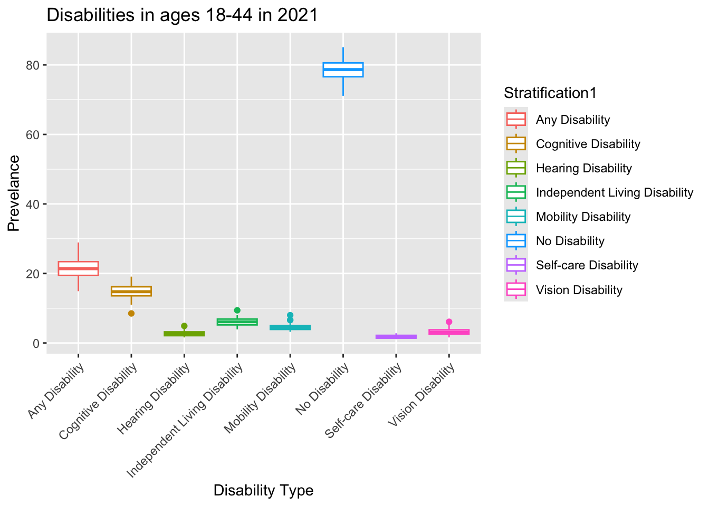
Now we will repeat this for the other age groups
agegroup2 <- cdcdata_final %>%filter(Response =="45-64", Indicator =="Disability status and types among adults 18 years of age or older by age group")
ggplot(agegroup2, aes(x = Stratification1 , y= Data_Value, color = Stratification1)) +geom_boxplot() +labs(title ="Disabilities in ages 45-64 in 2021",x ="Disability Type",y ="Prevelance" ) +theme(axis.text.x =element_text(angle =45, hjust =1))
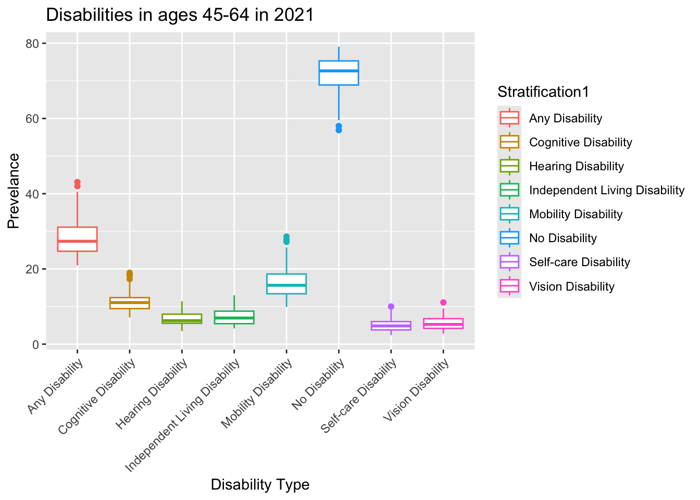
agegroup2 <- cdcdata_final %>%filter(Response =="65+", Indicator =="Disability status and types among adults 18 years of age or older by age group")
ggplot(agegroup2, aes(x = Stratification1 , y= Data_Value, color = Stratification1)) +geom_boxplot() +labs(title ="Disabilities in age 65+ in 2021",x ="Disability Type",y ="Prevelance" ) +theme(axis.text.x =element_text(angle =45, hjust =1))
These 3 boxplots tell us how prevalence of disabilities changes as age increases. If we look at just the “Any Disability” category we see the prevalence noticably increase as age increases. We also see that a majority of those sampled have no disability.
#####Now we will see if there is any correlation to age and disability, for this we will make a variable that combines all the disability entries minus those that selected no disability. and a new variable for age
# Assuming `prevalence` is the outcome variable, and `ages` and `disability_yes` are predictorslm_model <-lm(Data_Value ~ Ages + disability_yes, data = cdcdata_final)# View the summary of the modelsummary(lm_model)
Call:
lm(formula = Data_Value ~ Ages + disability_yes, data = cdcdata_final)
Residuals:
Min 1Q Median 3Q Max
-28.646 -7.649 -4.935 7.090 43.351
Coefficients:
Estimate Std. Error t value Pr(>|t|)
(Intercept) 64.9818 1.1963 54.319 < 2e-16 ***
Ages65+ 5.1644 0.8021 6.439 2.09e-10 ***
disability_yesYes -54.9971 1.2060 -45.603 < 2e-16 ***
---
Signif. codes: 0 '***' 0.001 '**' 0.01 '*' 0.05 '.' 0.1 ' ' 1
Residual standard error: 11.27 on 787 degrees of freedom
(4810 observations deleted due to missingness)
Multiple R-squared: 0.7291, Adjusted R-squared: 0.7284
F-statistic: 1059 on 2 and 787 DF, p-value: < 2.2e-16
Now lets look at age and disability
I am going to approach this a little differently than before, I will first filter my Stratification 1 data to only contain “any disability” This will cut my entries down but it should give a good representation of disability prevelance in each race.
# Filter data for 'any disability' (assuming 'disability' is the variable containing disability types)cdcdata_disability <- cdcdata_final %>%filter(Stratification1 =="Any Disability")
#filter data for racescdcdata_race <- cdcdata_final %>%filter(Response %in%c("American Indian or Alaska Native, non-Hispanic","Asian, non-Hispanic","Black, non-Hispanic","Hispanic", "Native Hawaiian or Other Pacific Islander, non-Hispanic","Other / Multirace, non-Hispanic","White, non-Hispanic")) %>%filter(Stratification1=="Any Disability")
# Create a bar plot for disability prevalence by raceggplot(cdcdata_race, aes(x = Response, y = Data_Value, fill = Stratification1)) +geom_bar(stat ="identity", position ="dodge") +# Position bars side by sidelabs(title ="Prevalence of 'Any Disability' Across Racial Groups", x ="Race", y ="Disability Prevalence") +theme(axis.text.x =element_text(angle =45, hjust =1)) # Rotate x-axis labels
Warning: Removed 77 rows containing missing values or values outside the scale range
(`geom_bar()`).
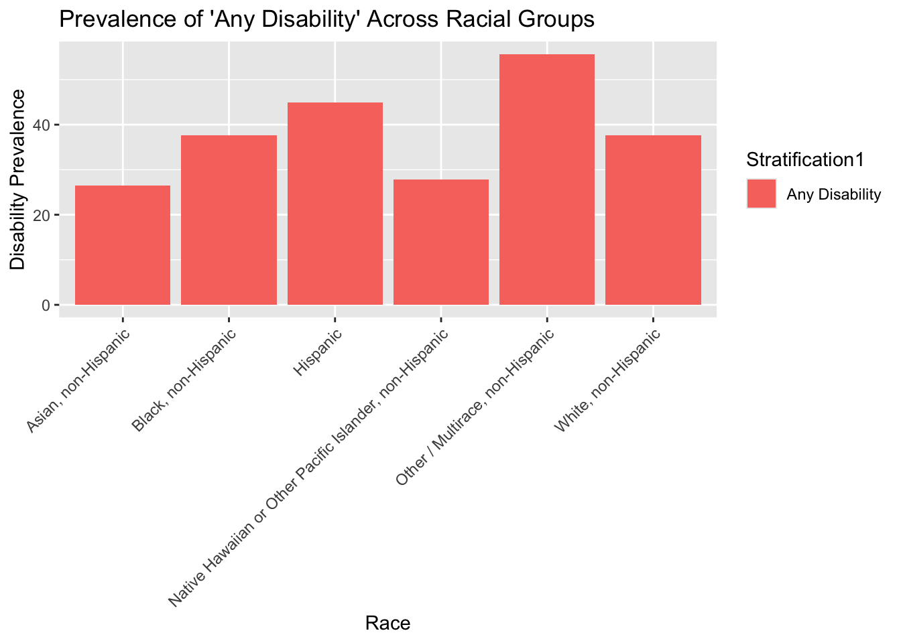
From this we gather that multiracial/other individuals had a higher prevalence of disability, lets see what disabilities.
#filtering again to only include response = multiracemultirace <- cdcdata_final %>%filter(Response =="Other / Multirace, non-Hispanic")
ggplot(multirace, aes(x = Stratification1 , y= Data_Value, color = Stratification1)) +geom_boxplot() +labs(title ="Disabilities in those that are other/multirace in 2021",x ="Disability Type",y ="Prevelance" ) +theme(axis.text.x =element_text(angle =45, hjust =1))
Warning: Removed 127 rows containing non-finite outside the scale range
(`stat_boxplot()`).
From these we see a higher prevalence of cognitive disability in those that are multirace/other
Next I will do the same for each race
black <- cdcdata_final %>%filter(Response =="Black, non-Hispanic")ggplot(black, aes(x = Stratification1 , y= Data_Value, color = Stratification1)) +geom_boxplot() +labs(title ="Disabilities in those that are other/multirace in 2021",x ="Disability Type",y ="Prevelance" ) +theme(axis.text.x =element_text(angle =45, hjust =1))
Warning: Removed 121 rows containing non-finite outside the scale range
(`stat_boxplot()`).
asian <- cdcdata_final %>%filter(Response =="Asian, non-Hispanic")ggplot(asian, aes(x = Stratification1 , y= Data_Value, color = Stratification1)) +geom_boxplot() +labs(title ="Disabilities in those that are other/multirace in 2021",x ="Disability Type",y ="Prevelance" ) +theme(axis.text.x =element_text(angle =45, hjust =1))
Warning: Removed 309 rows containing non-finite outside the scale range
(`stat_boxplot()`).
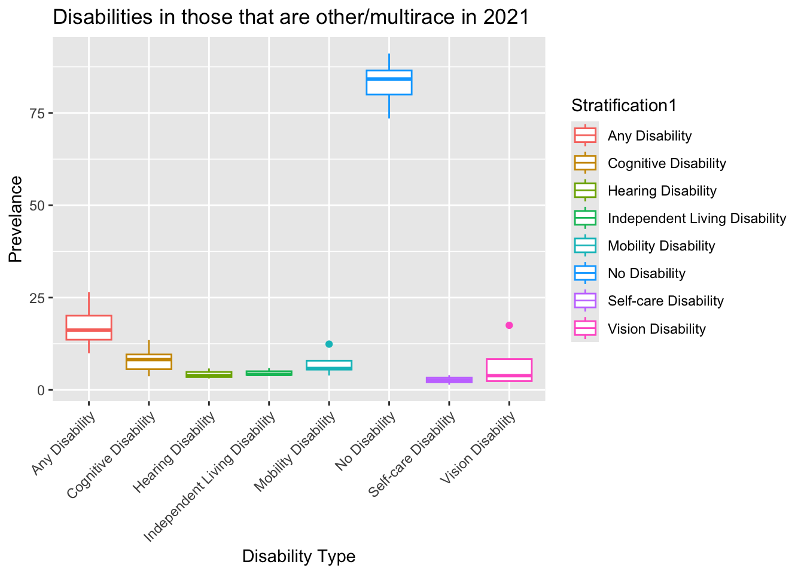
native <- cdcdata_final %>%filter(Response =="American Indian or Alaska Native, non-Hispanic")ggplot(native, aes(x = Stratification1 , y= Data_Value, color = Stratification1)) +geom_boxplot() +labs(title ="Disabilities in those that are other/multirace in 2021",x ="Disability Type",y ="Prevelance" ) +theme(axis.text.x =element_text(angle =45, hjust =1))
Warning: Removed 253 rows containing non-finite outside the scale range
(`stat_boxplot()`).
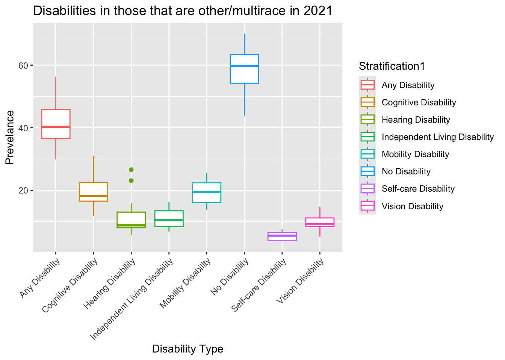
islander <- cdcdata_final %>%filter(Response =="Native Hawaiian or Other Pacific Islander, non-Hispanic")ggplot(islander, aes(x = Stratification1 , y= Data_Value, color = Stratification1)) +geom_boxplot() +labs(title ="Disabilities in those that are other/multirace in 2021",x ="Disability Type",y ="Prevelance" ) +theme(axis.text.x =element_text(angle =45, hjust =1))
Warning: Removed 390 rows containing non-finite outside the scale range
(`stat_boxplot()`).
white <- cdcdata_final %>%filter(Response =="White, non-Hispanic")ggplot(white, aes(x = Stratification1 , y= Data_Value, color = Stratification1)) +geom_boxplot() +labs(title ="Disabilities in those that are other/multirace in 2021",x ="Disability Type",y ="Prevelance" ) +theme(axis.text.x =element_text(angle =45, hjust =1))
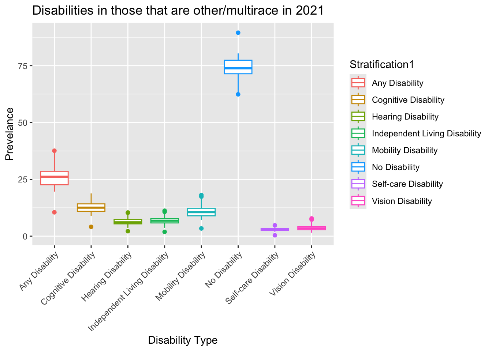
The last two demographics to see are sex and veteran status, I will be doing alot of what has previously been done for this section.
# Filter data for 'any disability' (assuming 'disability' is the variable containing disability types)cdcdata_disability <- cdcdata_final %>%filter(Stratification1 =="Any Disability")
#filter data for genderscdcdata_sex <- cdcdata_final %>%filter(Response %in%c("Female", "Male" )) %>%filter(Stratification1=="Any Disability")
# Create a bar plot for disability prevalence by genderggplot(cdcdata_sex, aes(x = Response, y = Data_Value, fill = Stratification1)) +geom_bar(stat ="identity", position ="dodge") +# Position bars side by sidelabs(title ="Prevalence of 'Any Disability' by sex", x ="Sex", y ="Disability Prevalence") +theme(axis.text.x =element_text(angle =45, hjust =1)) # Rotate x-axis labels
#Disabilities in femalesfemale <- cdcdata_final %>%filter(Response =="Female")ggplot(female, aes(x = Stratification1 , y= Data_Value, color = Stratification1)) +geom_boxplot() +labs(title ="Disabilities in those that are female",x ="Disability Type",y ="Prevelance" ) +theme(axis.text.x =element_text(angle =45, hjust =1))
#Disabilities in malesmale <- cdcdata_final %>%filter(Response =="Male")ggplot(male, aes(x = Stratification1 , y= Data_Value, color = Stratification1)) +geom_boxplot() +labs(title ="Disabilities in those that are Male",x ="Disability Type",y ="Prevelance" ) +theme(axis.text.x =element_text(angle =45, hjust =1))
# Filter data for 'any disability' (assuming 'disability' is the variable containing disability types)cdcdata_disability <- cdcdata_final %>%filter(Stratification1 =="Any Disability")
#filter data for vet statuscdcdata_vet <- cdcdata_final %>%filter(Response %in%c("Veteran", "Non-Veteran" )) %>%filter(Stratification1=="Any Disability")
# Create a bar plot for disability prevalence by genderggplot(cdcdata_vet, aes(x = Response, y = Data_Value, fill = Stratification1)) +geom_bar(stat ="identity", position ="dodge") +# Position bars side by sidelabs(title ="Prevalence of 'Any Disability' by Veteran Status", x ="Status", y ="Disability Prevalence") +theme(axis.text.x =element_text(angle =45, hjust =1)) # Rotate x-axis labels
#Disabilities in veteransvet <- cdcdata_final %>%filter(Response =="Veteran")ggplot(vet, aes(x = Stratification1 , y= Data_Value, color = Stratification1)) +geom_boxplot() +labs(title ="Disabilities in those that are Veterans",x ="Disability Type",y ="Prevelance" ) +theme(axis.text.x =element_text(angle =45, hjust =1))
Warning: Removed 34 rows containing non-finite outside the scale range
(`stat_boxplot()`).
vet_no <- cdcdata_final %>%filter(Response =="Non-Veteran")ggplot(vet_no, aes(x = Stratification1 , y= Data_Value, color = Stratification1)) +geom_boxplot() +labs(title ="Disabilities in those that are Not Veterans",x ="Disability Type",y ="Prevelance" ) +theme(axis.text.x =element_text(angle =45, hjust =1))
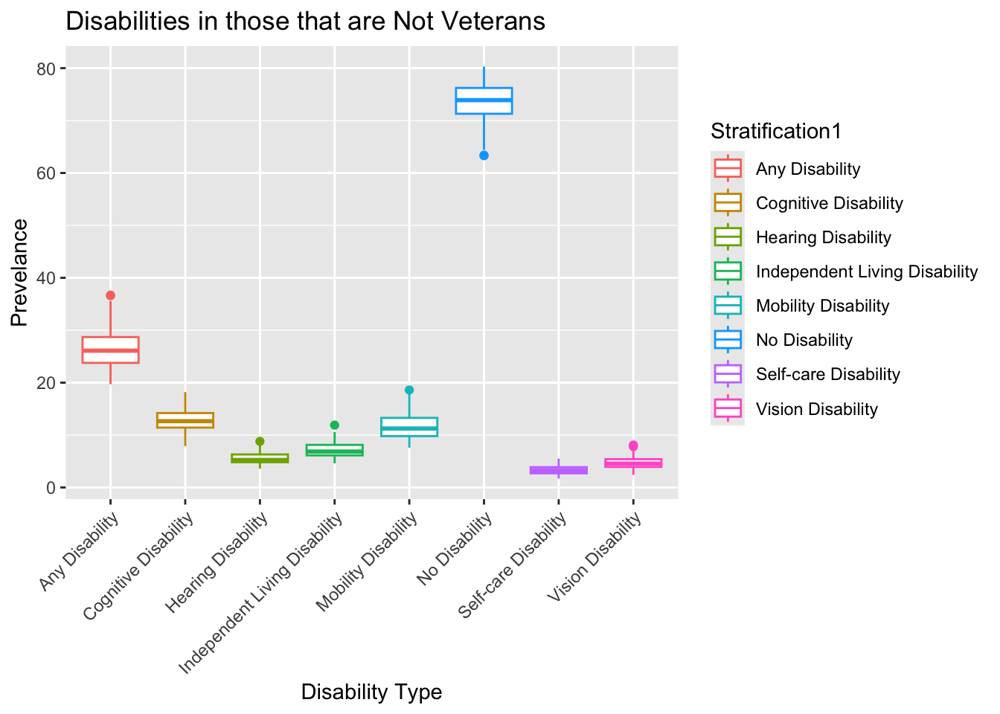
This section contributed by Guozheng Yang
Thanks to Alexis for the effort!!!
The primary author analyzed the distribution of different types of disabilities among different demographic groups. The demographic characteristics of the study population are depict by age group, gender, race, and veteran status. First of all, I want to take a look at the frequency table of these demographic variables.
# Frequency table of different table(cdcdata_final$Response)
18-44
400
45-64
400
65+
400
American Indian or Alaska Native, non-Hispanic
400
Asian, non-Hispanic
400
Black, non-Hispanic
400
Female
400
Hispanic
400
Male
400
Native Hawaiian or Other Pacific Islander, non-Hispanic
400
Non-Veteran
400
Other / Multirace, non-Hispanic
400
Veteran
400
White, non-Hispanic
400
As shown, each category contains 400 records. Then I want to check how the data is structured by Disability Status and Disability Type within each category of Response.
# Frequency table of StratificationCategory1 by Responsecdcdata_final %>%count(Response, StratificationCategory1, Stratification1)
# A tibble: 112 × 4
Response StratificationCategory1 Stratification1 n
<chr> <chr> <chr> <int>
1 18-44 Disability Status Any Disability 50
2 18-44 Disability Status No Disability 50
3 18-44 Disability Type Cognitive Disability 50
4 18-44 Disability Type Hearing Disability 50
5 18-44 Disability Type Independent Living Disability 50
6 18-44 Disability Type Mobility Disability 50
7 18-44 Disability Type Self-care Disability 50
8 18-44 Disability Type Vision Disability 50
9 45-64 Disability Status Any Disability 50
10 45-64 Disability Status No Disability 50
# ℹ 102 more rows
So, for each category in Response, there are 100 corresponding Disability Status with half being Any Disability and the other half being No Disability. Also, the rest 300 records for the Response category correspond to Disability Type, with 50 records for each of the disability types including Cognitive Disability, Hearing Disability, Independent Living Disability, Mobility Disability, Self-care Disability, and Vision Disability. Of note, this 50 records for each category in Response should denote the summary records for the 50 states in the US. Now I want to use Georgia data as an example and check this structure.
# Frequency table of StratificationCategory1 by Response: Georgiacdcdata_final %>%filter(LocationDesc=="Georgia") %>%count(Response, StratificationCategory1, Stratification1)
# A tibble: 112 × 4
Response StratificationCategory1 Stratification1 n
<chr> <chr> <chr> <int>
1 18-44 Disability Status Any Disability 1
2 18-44 Disability Status No Disability 1
3 18-44 Disability Type Cognitive Disability 1
4 18-44 Disability Type Hearing Disability 1
5 18-44 Disability Type Independent Living Disability 1
6 18-44 Disability Type Mobility Disability 1
7 18-44 Disability Type Self-care Disability 1
8 18-44 Disability Type Vision Disability 1
9 45-64 Disability Status Any Disability 1
10 45-64 Disability Status No Disability 1
# ℹ 102 more rows
It confirms that each state will have a list of Response categories with corresponding StratificationCategory1 and Stratification1. As the primary author analyzed the distribution of Data_Value by Stratification1 within different Response categories, I will follow the same route.
First of all, let’s create a new data frame to store the simulation data. At this first step, we can just fill in what’s known for sure and leave the numeric variable (i.e., Data_Value) which needs distribution parameters to be generated. Of note, the original dataset mixed the categories about age group, gender, race, and veteran status. I will simulate different datasets for each of these demographic factors.
# Data frame for simulation data: agesim_age <-data.frame(Response=rep(c(rep("18-44", 8), rep("45-64", 8), rep("65+", 8)), 50),StratificationCategory1=rep(rep(c(rep("Disability Status", 2), rep("Disability Type", 6)),3), 50),Stratification1=rep(c(rep(c("Any Disability", "No Disability", "Cognitive Disability", "Hearing Disability", "Independent Living Disability", "Mobility Disability", "Self-care Disability", "Vision Disability"),3)),50),Data_Value=NA)# Data frame for simulation data: gendersim_gender <-data.frame(Response=rep(c(rep("Male", 8), rep("Female", 8)), 50),StratificationCategory1=rep(rep(c(rep("Disability Status", 2), rep("Disability Type", 6)),2), 50),Stratification1=rep(c(rep(c("Any Disability", "No Disability", "Cognitive Disability", "Hearing Disability", "Independent Living Disability", "Mobility Disability", "Self-care Disability", "Vision Disability"),2)),50),Data_Value=NA)# Data frame for simulation data: racesim_race <-data.frame(Response=rep(c(rep("Hispanic", 8), rep("White, non-Hispanic", 8), rep("Black, non-Hispanic", 8), rep("American Indian or Alaska Native, non-Hispanic", 8), rep("Asian, non-Hispanic", 8), rep("Native Hawaiian or Other Pacific Islander, non-Hispanic", 8), rep("Other / Multirace, non-Hispanic", 8)), 50),StratificationCategory1=rep(rep(c(rep("Disability Status", 2), rep("Disability Type", 6)),7), 50),Stratification1=rep(c(rep(c("Any Disability", "No Disability", "Cognitive Disability", "Hearing Disability", "Independent Living Disability", "Mobility Disability", "Self-care Disability", "Vision Disability"),7)),50),Data_Value=NA)# Data frame for simulation data: veteran statussim_vet <-data.frame(Response=rep(c(rep("Veteran", 8), rep("Non-Veteran", 8)), 50),StratificationCategory1=rep(rep(c(rep("Disability Status", 2), rep("Disability Type", 6)),2), 50),Stratification1=rep(c(rep(c("Any Disability", "No Disability", "Cognitive Disability", "Hearing Disability", "Independent Living Disability", "Mobility Disability", "Self-care Disability", "Vision Disability"),2)),50),Data_Value=NA)
Now I will simulate the distribution of prevalence within different demographic factors. Let’s start with different age groups. Below is the histogram of prevalence among those who are 18-44 years old with different disability status or types.
# Histograms for age group 18-44cdcdata_final %>%filter(Response=="18-44") %>%ggplot(aes(x=Data_Value))+geom_histogram(fill="firebrick4", color="black", alpha=.8)+facet_wrap(~Stratification1, ncol=4, scales="free")+labs(x="Prevalence", y="Count")+theme_bw()+theme(axis.title.x=element_text(size=15, color="black", face="bold"),axis.title.y=element_text(size=15, color="black", face="bold"),axis.text.x=element_text(color="black", size=9),axis.text.y=element_text(color="black", size=9))
`stat_bin()` using `bins = 30`. Pick better value with `binwidth`.
Warning: Removed 10 rows containing non-finite outside the scale range
(`stat_bin()`).
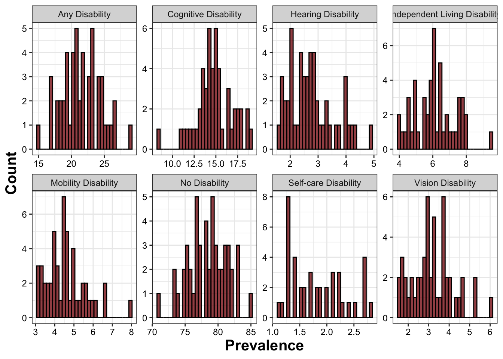
Now I will fit the distributions of prevalence for the 8 categories. As shown, most of the prevalence records have a skewed distribution. For ease of report, I will just fit a normal distribution to each of them.
# Fit normal distributiondata_1844 <- cdcdata_final %>%filter(Response=="18-44") %>%drop_na(Data_Value)# Parameters for normal distributionnorm_1844 <-data.frame(Str=levels(cdcdata_final$Stratification1),mean=rep(NA, length(levels(cdcdata_final$Stratification1))),sd=rep(NA, length(levels(cdcdata_final$Stratification1))))# Run a loop to estimate parametersfor(i in1:length(levels(cdcdata_final$Stratification1))){ x <- data_1844[data_1844$Stratification1==norm_1844$Str[i],]$Data_Value fit <-fitdist(x, "norm") norm_1844$mean[i] <- fit$estimate[1] norm_1844$sd[i] <- fit$estimate[2]}# Outputnorm_1844
Similarly, let’s simulate normally distributed data for those aged 45-64 years or 65+ years. Below I’m showing the histograms for those aged 45-64 years old.
# Histograms for age group 45-64cdcdata_final %>%filter(Response=="45-64") %>%ggplot(aes(x=Data_Value))+geom_histogram(fill="firebrick4", color="black", alpha=.8)+facet_wrap(~Stratification1, ncol=4, scales="free")+labs(x="Prevalence", y="Count")+theme_bw()+theme(axis.title.x=element_text(size=15, color="black", face="bold"),axis.title.y=element_text(size=15, color="black", face="bold"),axis.text.x=element_text(color="black", size=9),axis.text.y=element_text(color="black", size=9))
`stat_bin()` using `bins = 30`. Pick better value with `binwidth`.
Now let’s estimate the parameters and simulate data for this group.
# Fit normal distributiondata_4564 <- cdcdata_final %>%filter(Response=="45-64") %>%drop_na(Data_Value)# Parameters for normal distributionnorm_4564 <-data.frame(Str=levels(cdcdata_final$Stratification1),mean=rep(NA, length(levels(cdcdata_final$Stratification1))),sd=rep(NA, length(levels(cdcdata_final$Stratification1))))# Run a loop to estimate parametersfor(i in1:length(levels(cdcdata_final$Stratification1))){ x <- data_4564[data_4564$Stratification1==norm_4564$Str[i],]$Data_Value fit <-fitdist(x, "norm") norm_4564$mean[i] <- fit$estimate[1] norm_4564$sd[i] <- fit$estimate[2]}# Outputnorm_4564
Below are the histograms for those aged 65+ years old.
# Histograms for age group 65+cdcdata_final %>%filter(Response=="65+") %>%ggplot(aes(x=Data_Value))+geom_histogram(fill="firebrick4", color="black", alpha=.8)+facet_wrap(~Stratification1, ncol=4, scales="free")+labs(x="Prevalence", y="Count")+theme_bw()+theme(axis.title.x=element_text(size=15, color="black", face="bold"),axis.title.y=element_text(size=15, color="black", face="bold"),axis.text.x=element_text(color="black", size=9),axis.text.y=element_text(color="black", size=9))
`stat_bin()` using `bins = 30`. Pick better value with `binwidth`.
Good, let’s simulate.
# Fit normal distributiondata_65 <- cdcdata_final %>%filter(Response=="65+") %>%drop_na(Data_Value)# Parameters for normal distributionnorm_65 <-data.frame(Str=levels(cdcdata_final$Stratification1),mean=rep(NA, length(levels(cdcdata_final$Stratification1))),sd=rep(NA, length(levels(cdcdata_final$Stratification1))))# Run a loop to estimate parametersfor(i in1:length(levels(cdcdata_final$Stratification1))){ x <- data_65[data_65$Stratification1==norm_65$Str[i],]$Data_Value fit <-fitdist(x, "norm") norm_65$mean[i] <- fit$estimate[1] norm_65$sd[i] <- fit$estimate[2]}# Outputnorm_65
So far so good. Let’s repeat what we have done for the other three demographic factors: gender, race, and veteran status. Before we get started, let’s look at the histograms for males and females.
`stat_bin()` using `bins = 30`. Pick better value with `binwidth`.
Looks good! Let’s estimate the normal distribution parameters for males and females.
# Fit normal distributiondata_male <- cdcdata_final %>%filter(Response=="Male") %>%drop_na(Data_Value)# Parameters for normal distributionnorm_male <-data.frame(Str=levels(cdcdata_final$Stratification1),mean=rep(NA, length(levels(cdcdata_final$Stratification1))),sd=rep(NA, length(levels(cdcdata_final$Stratification1))))# Run a loop to estimate parametersfor(i in1:length(levels(cdcdata_final$Stratification1))){ x <- data_male[data_male$Stratification1==norm_male$Str[i],]$Data_Value fit <-fitdist(x, "norm") norm_male$mean[i] <- fit$estimate[1] norm_male$sd[i] <- fit$estimate[2]}# Outputnorm_male
# Fit normal distributiondata_female <- cdcdata_final %>%filter(Response=="Female") %>%drop_na(Data_Value)# Parameters for normal distributionnorm_female <-data.frame(Str=levels(cdcdata_final$Stratification1),mean=rep(NA, length(levels(cdcdata_final$Stratification1))),sd=rep(NA, length(levels(cdcdata_final$Stratification1))))# Run a loop to estimate parametersfor(i in1:length(levels(cdcdata_final$Stratification1))){ x <- data_female[data_female$Stratification1==norm_female$Str[i],]$Data_Value fit <-fitdist(x, "norm") norm_female$mean[i] <- fit$estimate[1] norm_female$sd[i] <- fit$estimate[2]}# Outputnorm_female
`stat_bin()` using `bins = 30`. Pick better value with `binwidth`.
Warning: Removed 127 rows containing non-finite outside the scale range
(`stat_bin()`).
Of note, some of the distributions are very sparse, this could cause some parameter estimation problems. Let’s run the regular steps and see what will happen.
# Fit normal distributiondata_Hispanic <- cdcdata_final %>%filter(Response=="Hispanic") %>%drop_na(Data_Value)# Parameters for normal distributionnorm_Hispanic <-data.frame(Str=levels(cdcdata_final$Stratification1),mean=rep(NA, length(levels(cdcdata_final$Stratification1))),sd=rep(NA, length(levels(cdcdata_final$Stratification1))))# Run a loop to estimate parametersfor(i in1:length(levels(cdcdata_final$Stratification1))){ x <- data_Hispanic[data_Hispanic$Stratification1==norm_Hispanic$Str[i],]$Data_Value fit <-fitdist(x, "norm") norm_Hispanic$mean[i] <- fit$estimate[1] norm_Hispanic$sd[i] <- fit$estimate[2]}# Outputnorm_Hispanic
# Fit normal distributiondata_white <- cdcdata_final %>%filter(Response=="White, non-Hispanic") %>%drop_na(Data_Value)# Parameters for normal distributionnorm_white <-data.frame(Str=levels(cdcdata_final$Stratification1),mean=rep(NA, length(levels(cdcdata_final$Stratification1))),sd=rep(NA, length(levels(cdcdata_final$Stratification1))))# Run a loop to estimate parametersfor(i in1:length(levels(cdcdata_final$Stratification1))){ x <- data_white[data_white$Stratification1==norm_white$Str[i],]$Data_Value fit <-fitdist(x, "norm") norm_white$mean[i] <- fit$estimate[1] norm_white$sd[i] <- fit$estimate[2]}# Outputnorm_white
# Fit normal distributiondata_black <- cdcdata_final %>%filter(Response=="Black, non-Hispanic") %>%drop_na(Data_Value)# Parameters for normal distributionnorm_black <-data.frame(Str=levels(cdcdata_final$Stratification1),mean=rep(NA, length(levels(cdcdata_final$Stratification1))),sd=rep(NA, length(levels(cdcdata_final$Stratification1))))# Run a loop to estimate parametersfor(i in1:length(levels(cdcdata_final$Stratification1))){ x <- data_black[data_black$Stratification1==norm_black$Str[i],]$Data_Value fit <-fitdist(x, "norm") norm_black$mean[i] <- fit$estimate[1] norm_black$sd[i] <- fit$estimate[2]}# Outputnorm_black
# Fit normal distributiondata_AI <- cdcdata_final %>%filter(Response=="American Indian or Alaska Native, non-Hispanic") %>%drop_na(Data_Value)# Parameters for normal distributionnorm_AI <-data.frame(Str=levels(cdcdata_final$Stratification1),mean=rep(NA, length(levels(cdcdata_final$Stratification1))),sd=rep(NA, length(levels(cdcdata_final$Stratification1))))# Run a loop to estimate parametersfor(i in1:length(levels(cdcdata_final$Stratification1))){ x <- data_AI[data_AI$Stratification1==norm_AI$Str[i],]$Data_Value fit <-fitdist(x, "norm") norm_AI$mean[i] <- fit$estimate[1] norm_AI$sd[i] <- fit$estimate[2]}# Outputnorm_AI
# Simulate: race AIfor(i in1:length(levels(cdcdata_final$Stratification1))){ sim_race[which(sim_race$Response=="American Indian or Alaska Native, non-Hispanic"& sim_race$Stratification1==levels(cdcdata_final$Stratification1)[i]),]$Data_Value <-rnorm(n=sum(sim_race$Response=="American Indian or Alaska Native, non-Hispanic"& sim_race$Stratification1==levels(cdcdata_final$Stratification1)[i]), mean=norm_AI$mean[i], sd=norm_AI$sd[i])}
# Fit normal distributiondata_AS <- cdcdata_final %>%filter(Response=="Asian, non-Hispanic") %>%drop_na(Data_Value)# Parameters for normal distributionnorm_AS <-data.frame(Str=levels(cdcdata_final$Stratification1),mean=rep(NA, length(levels(cdcdata_final$Stratification1))),sd=rep(NA, length(levels(cdcdata_final$Stratification1))))# Run a loop to estimate parametersfor(i in1:length(levels(cdcdata_final$Stratification1))){ x <- data_AS[data_AS$Stratification1==norm_AS$Str[i],]$Data_Value fit <-fitdist(x, "norm") norm_AS$mean[i] <- fit$estimate[1] norm_AS$sd[i] <- fit$estimate[2]}# Outputnorm_AS
When I was trying to simulate data for Native Hawaiian or Other Pacific Islander, non-Hispanic samples, there is a problem that this subgroup has a too small sample size. So I will manually fill in the simulation data based on what we have from the original dataset. First let’s look how small this group is.
# Fit normal distributiondata_PI <- cdcdata_final %>%filter(Response=="Native Hawaiian or Other Pacific Islander, non-Hispanic") %>%drop_na(Data_Value)data_PI
# A tibble: 10 × 9
LocationDesc Category Indicator Response StratificationCatego…¹
<chr> <chr> <chr> <chr> <chr>
1 Hawaii Disability Estimates Disability… Native … Disability Type
2 Hawaii Disability Estimates Disability… Native … Disability Status
3 Hawaii Disability Estimates Disability… Native … Disability Status
4 Hawaii Disability Estimates Disability… Native … Disability Type
5 Hawaii Disability Estimates Disability… Native … Disability Type
6 Hawaii Disability Estimates Disability… Native … Disability Type
7 Hawaii Disability Estimates Disability… Native … Disability Type
8 Washington Disability Estimates Disability… Native … Disability Type
9 Washington Disability Estimates Disability… Native … Disability Status
10 Washington Disability Estimates Disability… Native … Disability Status
# ℹ abbreviated name: ¹StratificationCategory1
# ℹ 4 more variables: Stratification1 <fct>, Data_Value <dbl>,
# disability_yes <chr>, Ages <chr>
As shown, there are only 10 rows. To make my life easier, I will just fill in the simulation dataset with the mean of Data_Value in these sub-categories.
# Fill in simulation data manuallysim_race[which(sim_race$Response=="Native Hawaiian or Other Pacific Islander, non-Hispanic"& sim_race$Stratification1=="Any Disability"),]$Data_Value <- (27.8+24.5)/2sim_race[which(sim_race$Response=="Native Hawaiian or Other Pacific Islander, non-Hispanic"& sim_race$Stratification1=="No Disability"),]$Data_Value <- (72.2+75.5)/2sim_race[which(sim_race$Response=="Native Hawaiian or Other Pacific Islander, non-Hispanic"& sim_race$Stratification1=="Cognitive Disability"),]$Data_Value <-9.8sim_race[which(sim_race$Response=="Native Hawaiian or Other Pacific Islander, non-Hispanic"& sim_race$Stratification1=="Hearing Disability"),]$Data_Value <-7.6sim_race[which(sim_race$Response=="Native Hawaiian or Other Pacific Islander, non-Hispanic"& sim_race$Stratification1=="Independent Living Disability"),]$Data_Value <-6.3sim_race[which(sim_race$Response=="Native Hawaiian or Other Pacific Islander, non-Hispanic"& sim_race$Stratification1=="Mobility Disability"),]$Data_Value <- (12.4+18.1)/2sim_race[which(sim_race$Response=="Native Hawaiian or Other Pacific Islander, non-Hispanic"& sim_race$Stratification1=="Self-care Disability"),]$Data_Value <-0sim_race[which(sim_race$Response=="Native Hawaiian or Other Pacific Islander, non-Hispanic"& sim_race$Stratification1=="Vision Disability"),]$Data_Value <-3.6
Then, let’s run the regular steps for Other / Multirace, non-Hispanic.
# Fit normal distributiondata_other <- cdcdata_final %>%filter(Response=="Other / Multirace, non-Hispanic") %>%drop_na(Data_Value)# Parameters for normal distributionnorm_other <-data.frame(Str=levels(cdcdata_final$Stratification1),mean=rep(NA, length(levels(cdcdata_final$Stratification1))),sd=rep(NA, length(levels(cdcdata_final$Stratification1))))# Run a loop to estimate parametersfor(i in1:length(levels(cdcdata_final$Stratification1))){ x <- data_other[data_other$Stratification1==norm_other$Str[i],]$Data_Value fit <-fitdist(x, "norm") norm_other$mean[i] <- fit$estimate[1] norm_other$sd[i] <- fit$estimate[2]}# Outputnorm_other
`stat_bin()` using `bins = 30`. Pick better value with `binwidth`.
Good! Let’s estimate the normal distribution parameters for veterans and non-veterans.
# Fit normal distributiondata_vet <- cdcdata_final %>%filter(Response=="Veteran") %>%drop_na(Data_Value)# Parameters for normal distributionnorm_vet <-data.frame(Str=levels(cdcdata_final$Stratification1),mean=rep(NA, length(levels(cdcdata_final$Stratification1))),sd=rep(NA, length(levels(cdcdata_final$Stratification1))))# Run a loop to estimate parametersfor(i in1:length(levels(cdcdata_final$Stratification1))){ x <- data_vet[data_vet$Stratification1==norm_vet$Str[i],]$Data_Value fit <-fitdist(x, "norm") norm_vet$mean[i] <- fit$estimate[1] norm_vet$sd[i] <- fit$estimate[2]}# Outputnorm_vet
# Fit normal distributiondata_nvet <- cdcdata_final %>%filter(Response=="Non-Veteran") %>%drop_na(Data_Value)# Parameters for normal distributionnorm_nvet <-data.frame(Str=levels(cdcdata_final$Stratification1),mean=rep(NA, length(levels(cdcdata_final$Stratification1))),sd=rep(NA, length(levels(cdcdata_final$Stratification1))))# Run a loop to estimate parametersfor(i in1:length(levels(cdcdata_final$Stratification1))){ x <- data_nvet[data_nvet$Stratification1==norm_nvet$Str[i],]$Data_Value fit <-fitdist(x, "norm") norm_nvet$mean[i] <- fit$estimate[1] norm_nvet$sd[i] <- fit$estimate[2]}# Outputnorm_nvet
I will just copy the primary author’s code to make similar plots to check if the simulated data generally follow the same pattern. First of all, let’s look at the grouped boxplots for the three age groups.
# Grouped box plot for 18-44sim_age %>%filter(Response=="18-44") %>%ggplot(aes(x=Stratification1 , y=Data_Value, color=Stratification1)) +geom_boxplot() +labs(title="Simulation: Disabilities in ages 18-44 in 2021",x="Disability Type",y="Prevelance") +theme(axis.text.x=element_text(angle=45, hjust=1))
# Grouped box plot for 45-64sim_age %>%filter(Response=="45-64") %>%ggplot(aes(x=Stratification1 , y=Data_Value, color=Stratification1)) +geom_boxplot() +labs(title="Simulation: Disabilities in ages 45-64 in 2021",x="Disability Type",y="Prevelance") +theme(axis.text.x=element_text(angle=45, hjust=1))
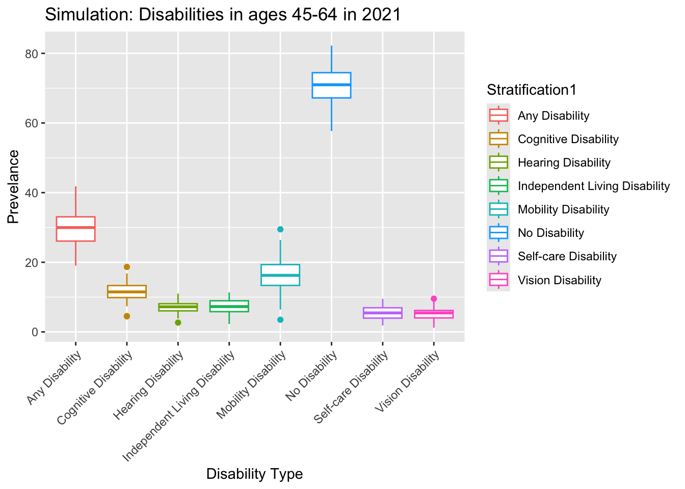
# Grouped box plot for 65+sim_age %>%filter(Response=="65+") %>%ggplot(aes(x=Stratification1 , y=Data_Value, color=Stratification1)) +geom_boxplot() +labs(title="Simulation: Disabilities in ages 65+ in 2021",x="Disability Type",y="Prevelance") +theme(axis.text.x=element_text(angle=45, hjust=1))
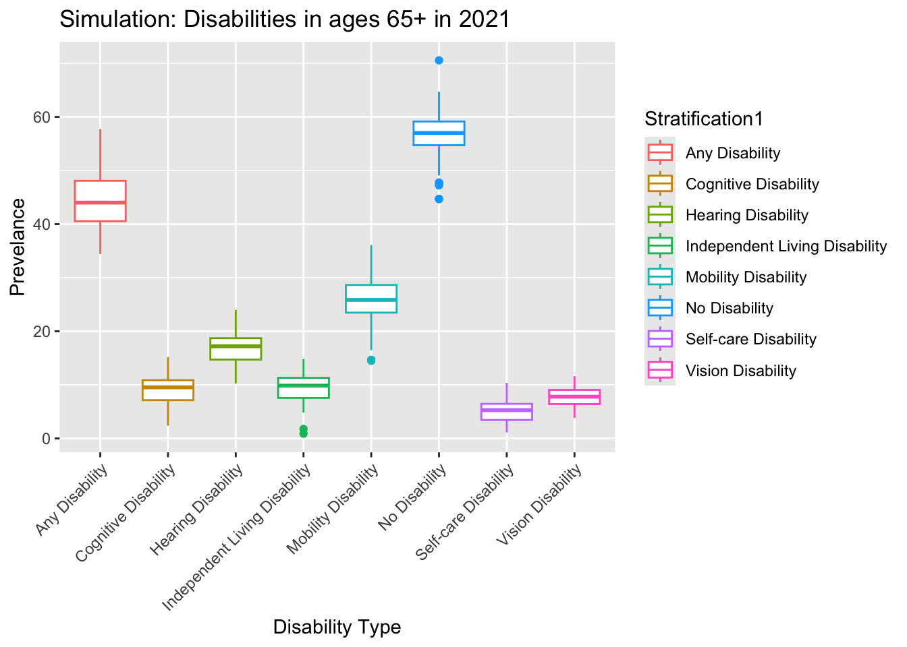
Looks perfect! The simulated prevalence records follows exactly the pattern as the original data! Now Let’s take a look at the pattern grouped by gender.
# Grouped box plot for malesim_gender %>%filter(Response=="Male") %>%ggplot(aes(x=Stratification1 , y=Data_Value, color=Stratification1)) +geom_boxplot() +labs(title="Simulation: Disabilities in males in 2021",x="Disability Type",y="Prevelance") +theme(axis.text.x=element_text(angle=45, hjust=1))
# Grouped box plot for femalesim_gender %>%filter(Response=="Female") %>%ggplot(aes(x=Stratification1 , y=Data_Value, color=Stratification1)) +geom_boxplot() +labs(title="Simulation: Disabilities in females in 2021",x="Disability Type",y="Prevelance") +theme(axis.text.x=element_text(angle=45, hjust=1))
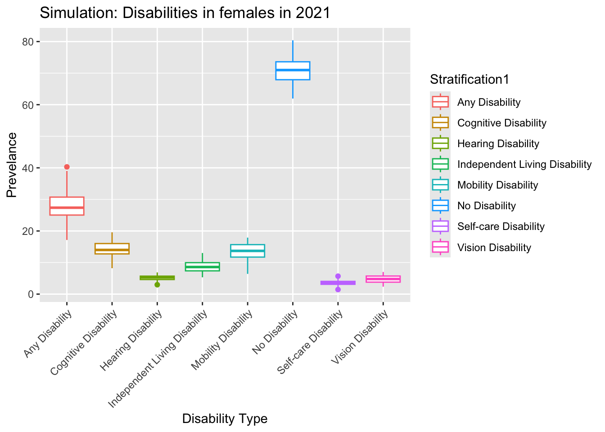
Also looks good. Then let’s try race groups.
# Grouped box plot for Hispanicsim_race %>%filter(Response=="Hispanic") %>%ggplot(aes(x=Stratification1 , y=Data_Value, color=Stratification1)) +geom_boxplot() +labs(title="Simulation: Disabilities in Hispanic in 2021",x="Disability Type",y="Prevelance") +theme(axis.text.x=element_text(angle=45, hjust=1))
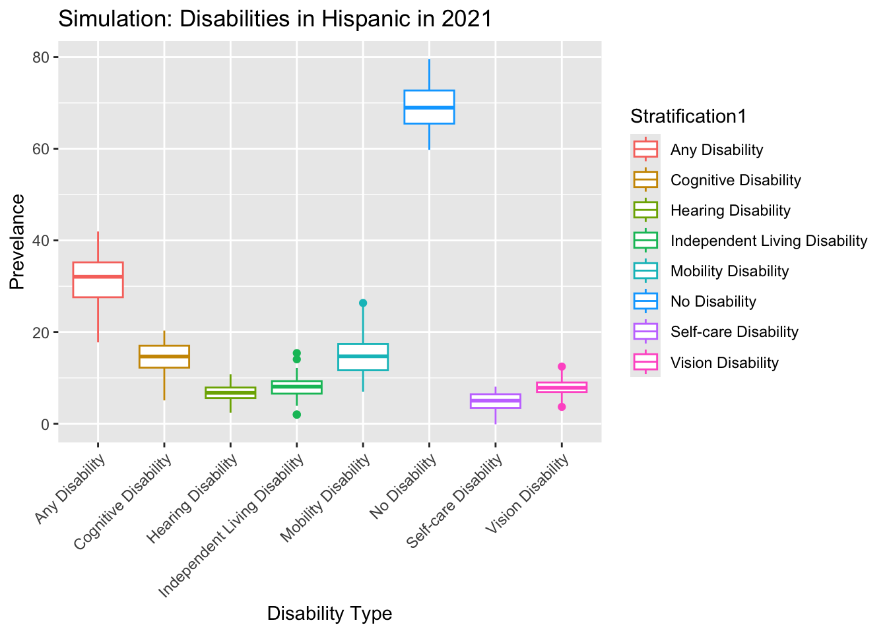
# Grouped box plot for White, non-Hispanicsim_race %>%filter(Response=="White, non-Hispanic") %>%ggplot(aes(x=Stratification1 , y=Data_Value, color=Stratification1)) +geom_boxplot() +labs(title="Simulation: Disabilities in White in 2021",x="Disability Type",y="Prevelance") +theme(axis.text.x=element_text(angle=45, hjust=1))
# Grouped box plot for Black, non-Hispanicsim_race %>%filter(Response=="Black, non-Hispanic") %>%ggplot(aes(x=Stratification1 , y=Data_Value, color=Stratification1)) +geom_boxplot() +labs(title="Simulation: Disabilities in Black in 2021",x="Disability Type",y="Prevelance") +theme(axis.text.x=element_text(angle=45, hjust=1))
# Grouped box plot for American Indian or Alaska Native, non-Hispanicsim_race %>%filter(Response=="American Indian or Alaska Native, non-Hispanic") %>%ggplot(aes(x=Stratification1 , y=Data_Value, color=Stratification1)) +geom_boxplot() +labs(title="Simulation: Disabilities in American Indian or Alaska Native in 2021",x="Disability Type",y="Prevelance") +theme(axis.text.x=element_text(angle=45, hjust=1))
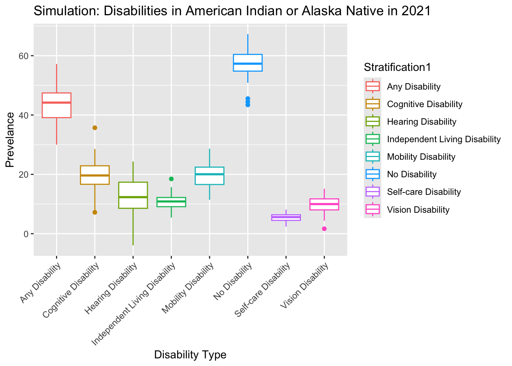
# Grouped box plot for Asian, non-Hispanicsim_race %>%filter(Response=="Asian, non-Hispanic") %>%ggplot(aes(x=Stratification1 , y=Data_Value, color=Stratification1)) +geom_boxplot() +labs(title="Simulation: Disabilities in Asian in 2021",x="Disability Type",y="Prevelance") +theme(axis.text.x=element_text(angle=45, hjust=1))
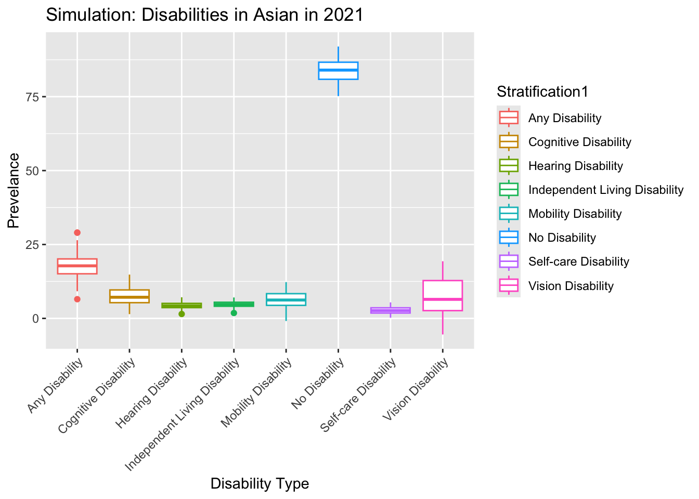
# Grouped box plot for Native Hawaiian or Other Pacific Islander, non-Hispanicsim_race %>%filter(Response=="Native Hawaiian or Other Pacific Islander, non-Hispanic") %>%ggplot(aes(x=Stratification1 , y=Data_Value, color=Stratification1)) +geom_boxplot() +labs(title="Simulation: Disabilities in Native Hawaiian or Other Pacific Islander in 2021",x="Disability Type",y="Prevelance") +theme(axis.text.x=element_text(angle=45, hjust=1))
# Grouped box plot for Other / Multirace, non-Hispanicsim_race %>%filter(Response=="Other / Multirace, non-Hispanic") %>%ggplot(aes(x=Stratification1 , y=Data_Value, color=Stratification1)) +geom_boxplot() +labs(title="Simulation: Disabilities in Other / Multirace in 2021",x="Disability Type",y="Prevelance") +theme(axis.text.x=element_text(angle=45, hjust=1))
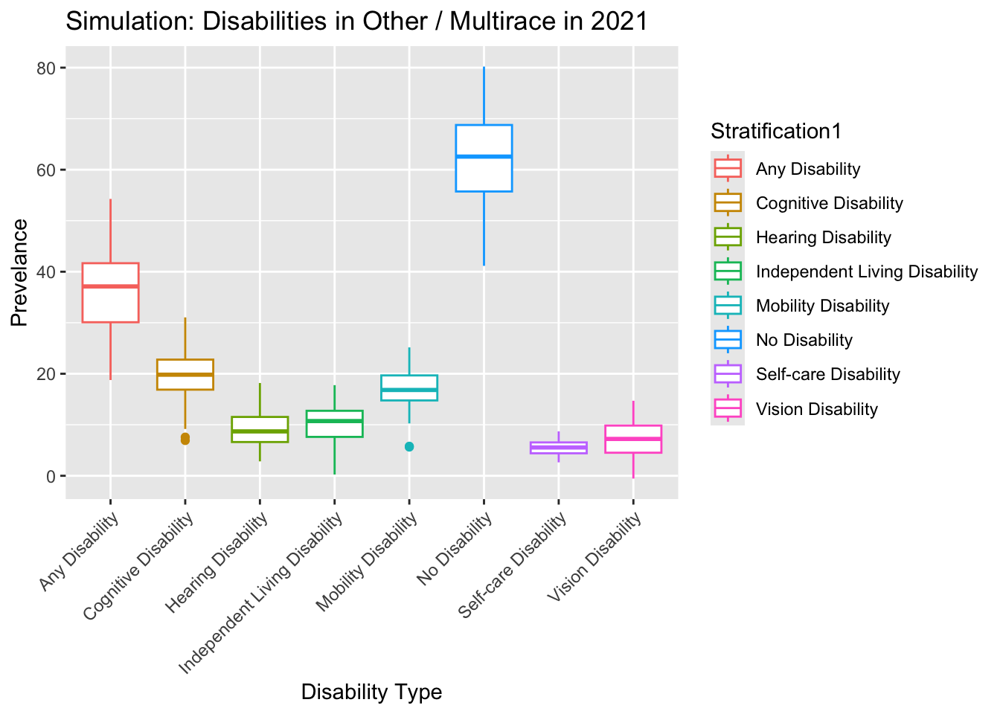
All boxplots look good except the Native Hawaiian or Other Pacific Islander, non-Hispanic one. With such a small sample size for this group, there is very little I can do about it. Anyway, the overall patterns follows the patterns in original dataset perfectly.
Finally, let’s look at the patterns involving veteran status.
# Grouped box plot for veteransim_vet %>%filter(Response=="Veteran") %>%ggplot(aes(x=Stratification1 , y=Data_Value, color=Stratification1)) +geom_boxplot() +labs(title="Simulation: Disabilities in veterans in 2021",x="Disability Type",y="Prevelance") +theme(axis.text.x=element_text(angle=45, hjust=1))
# Grouped box plot for non-veteransim_vet %>%filter(Response=="Non-Veteran") %>%ggplot(aes(x=Stratification1 , y=Data_Value, color=Stratification1)) +geom_boxplot() +labs(title="Simulation: Disabilities in non-veterans in 2021",x="Disability Type",y="Prevelance") +theme(axis.text.x=element_text(angle=45, hjust=1))
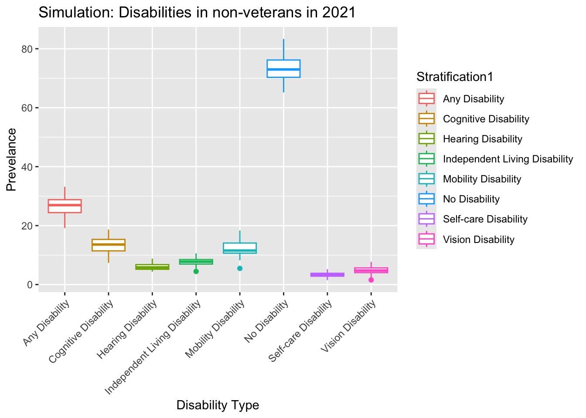
OK, by far, all patterns in the original dataset has been simulated. As this only involves univariate analysis, I did not look at the association between variables, which could take another week for simulation :)